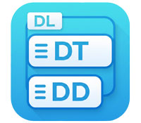

dl：description list

- プロンプト例
CSSでdescription listの見栄えを作るときの注意点
CSSでdescription listをスタイリングするときの注意点
1. HTML構造は崩さない（div化しない）
- <dlgt; は 意味論的に「用語と説明」 を表す要素です。
- レイアウト目的で div に置き換えるのはNG。
<dl> <dt>名前</dt> <dd>山田 太郎</dd> </dl>
→ CSSだけで見た目を調整 するのが正解。
2. display: flex / grid の使い分け
シンプルな2カラム → flex
dl { display: flex; flex-wrap: wrap; } dt { width: 30%; } dd { width: 70%; }
注意点
- dt と dd の 数がズレると崩れる
- 複数行ddで 縦位置がズレやすい
安定レイアウト → grid（推奨）
dl { display: grid; grid-template-columns: 150px 1fr; gap: 8px 16px; }
メリット
- 複数行でも 高さが自動揃え
- レスポンシブ対応が楽
- 実務では gridが最適解
3. margin の初期値に注意（ブラウザ差）
dl, dt, dd は ブラウザデフォルトの余白がバラバラ
dl, dt, dd { margin: 0; }
→ まずリセットが鉄則
4. dt の font-weight に注意
多くのブラウザで dt { font-weight: bold; } がデフォルト。
dt { font-weight: 600; /* or normal */ }
→ デザイン指定に合わせて 明示指定する
5. モバイル対応を最初から考える
PC → 横並び / SP → 縦積み（王道）
dl { display: grid; grid-template-columns: 150px 1fr; } @media (max-width: 600px) { dl { grid-template-columns: 1fr; } }
→ スマホで可読性が爆上がり
6. 境界線（区切り線）の付け方
dt, dd { padding: 8px 0; border-bottom: 1px solid #eee; }
- dt と dd 両方に引くと二重線になる
安全な方法
dl > div { border-bottom: 1px solid #eee; }
<dl> <div> <dt>会社名</dt> <dd>株式会社〇〇</dd> </div> </dl>
※ HTML的に厳密さが必要なら ::after 擬似要素方式が◎
7. dt が長文になるケースを想定する
dt { white-space: nowrap; }
⚠ 長すぎるとレイアウト崩壊
おすすめ
dt { word-break: break-word; }
8. tableの代替にしない
❌ NG用途
- 表形式データ
- 数値比較表
→ これは table を使うべき
dl の正しい用途
- プロフィール
- 用語と説明
- フォーム確認画面
- 設定項目 + 内容
実務で使える鉄板CSSテンプレ
dl { display: grid; grid-template-columns: 160px 1fr; gap: 8px 16px; margin: 0; } dt, dd { margin: 0; padding: 8px 0; } dt { font-weight: 600; } @media (max-width: 600px) { dl { grid-template-columns: 1fr; } }
よくある失敗まとめ
| 失敗 | 原因 |
|---|---|
| レイアウトが崩れる | flex使用 + dd複数行 |
| 余白がズレる | デフォルトmargin未リセット |
| SPで読めない | レスポンシブ未考慮 |
| 意味構造破壊 | div化 |